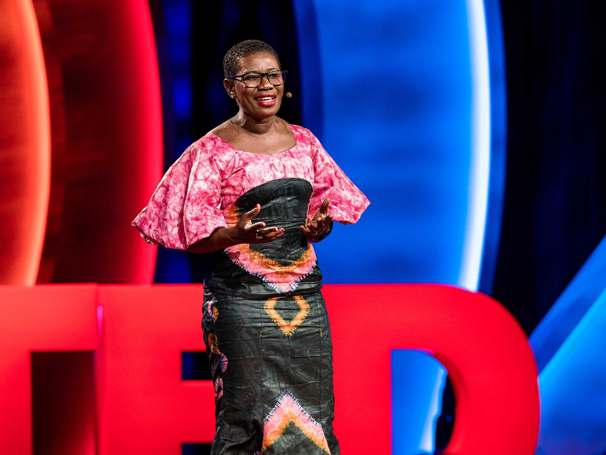
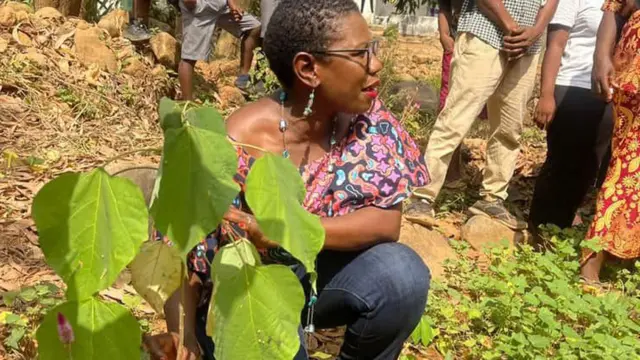

Yvonne Aki-Sawyerr: Transforming Freetown and Leading the Fight Against Climate Change
Yvonne Aki-Sawyerr is an influential Sierra Leonean politician, environmental activist, and the current Mayor of Freetown. Her dedication to urban development and climate resilience has earned her national and international acclaim as a transformative leader. Known for her commitment to transparency, sustainability, and social justice, Aki-Sawyerr has reshaped the capital city of Freetown, aiming to create a more inclusive, greener, and economically vibrant community. Her innovative initiatives have made Freetown a model for cities around the world working to address the challenges of urbanization and climate change.
Born and raised in Freetown, Sierra Leone, Aki-Sawyerr’s early experiences shaped her understanding of the challenges facing the city. After studying abroad and gaining experience in finance and development, she returned to Sierra Leone, driven by a desire to contribute to her home country. She initially worked in financial consulting and later took on leadership roles in various development organizations, where she addressed issues such as youth empowerment, public health, and infrastructure. Aki-Sawyerr’s career took a significant turn during the 2014 Ebola outbreak in West Africa. As a critical member of the response team in Sierra Leone, she demonstrated exceptional leadership, coordinating efforts to contain the virus and supporting impacted communities. Her successful work in the Ebola response laid the foundation for her subsequent career in public service.
In 2018, Yvonne Aki-Sawyerr was elected Mayor of Freetown, becoming the first woman in decades to hold the position. She entered office with a bold vision for transforming Freetown into a sustainable, modern city. Her “Transform Freetown” initiative set ambitious goals across multiple sectors, including housing, waste management, education, healthcare, and environmental conservation. Her leadership style, marked by transparency and accountability, quickly gained the trust of Freetown’s residents. As Mayor, Aki-Sawyerr has faced numerous challenges, from limited funding to political obstacles. However, her persistence and dedication to the city’s progress have propelled Freetown’s transformation, inspiring hope and pride among its citizens
She introduced the 'Transform Freetown initiative', which is a comprehensive urban development plan aimed at addressing Freetown’s critical challenges through sustainable practices. Key focuses include urban greening through the "Tree Town" project, which aims to plant one million trees to combat deforestation and landslides; an improved waste management system with citywide waste collection and recycling initiatives; affordable housing projects to alleviate overcrowding in informal settlements; and climate resilience strategies to protect the city from the impacts of climate change. Through these efforts, Aki-Sawyerr is fostering a greener, more resilient, and inclusive Freetown.
In addition to her work in Freetown, Yvonne Aki-Sawyerr has become a global voice in the fight against climate change. Her leadership on environmental issues has led to her participation in high-profile international forums, including the United Nations Climate Change Conference (COP), where she has advocated for cities’ roles in combating climate change. Aki-Sawyerr’s message is clear: developing nations, especially those vulnerable to climate change, need resources to implement climate adaptation strategies. Her advocacy highlights the disproportionate effects of climate change on African cities and the urgency of global cooperation to address these challenges.
Her efforts have earned her numerous accolades. In 2022, she was recognized as one of the "100 Most Influential African Women" by Avance Media, cementing her status as a trailblazer in African urban governance. Her work has also been featured in international publications, inspiring other leaders and city officials worldwide to adopt similar approaches to urban transformation.
Yvonne Aki-Sawyerr’s work as Mayor of Freetown serves as a beacon of hope for cities facing complex environmental and social challenges. Her commitment to transparency, sustainability, and citizen engagement has transformed Freetown, inspiring both Sierra Leoneans and international communities. As she continues her tenure, Aki-Sawyerr remains focused on building a resilient, inclusive Freetown where progress is sustainable and benefits everyone. Her legacy will undoubtedly serve as a guiding light for future generations of African leaders and urban planners seeking to create positive, lasting change in their cities.